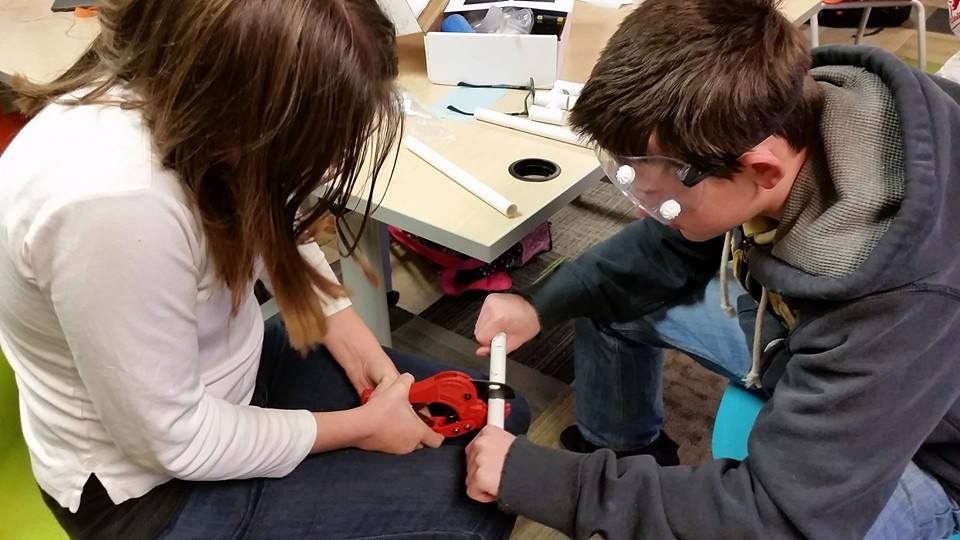
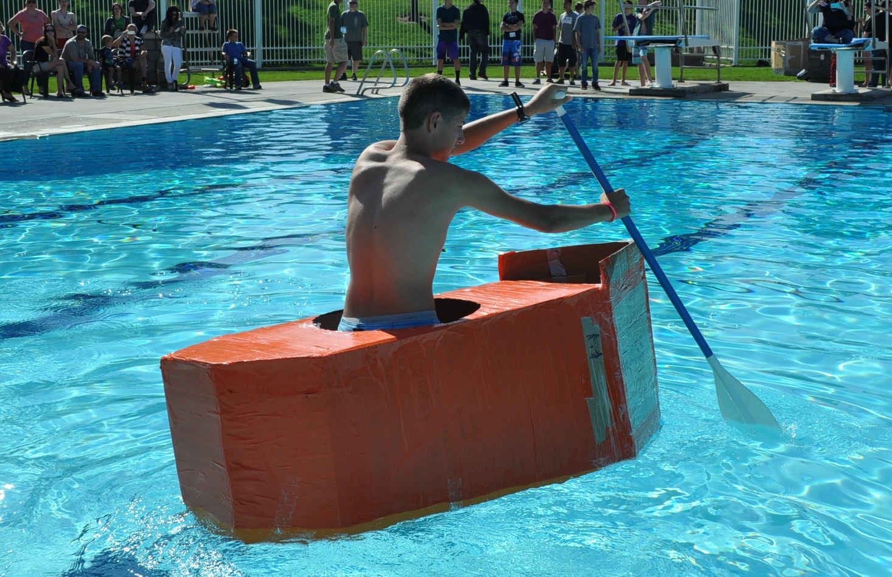
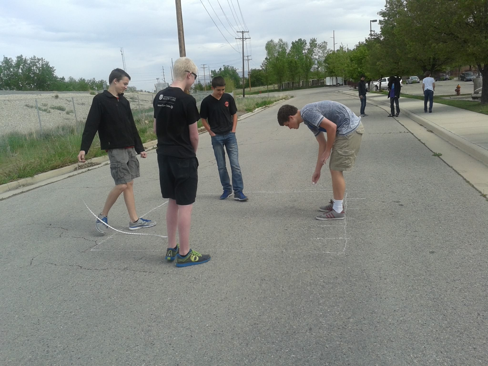
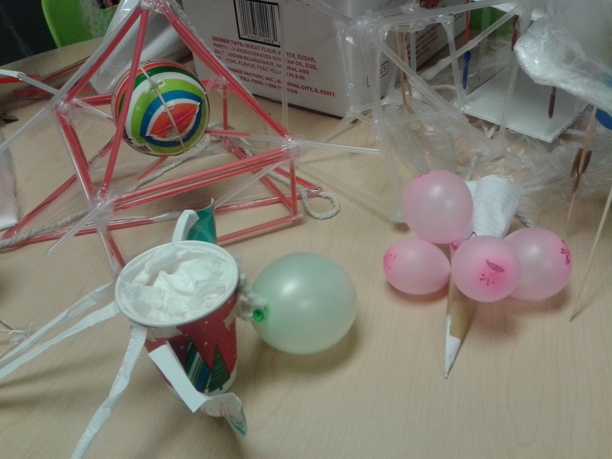
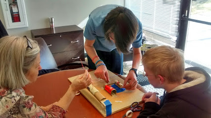

Hands-on projects
Our innovative hands-on learning approach enables students to develop creative contextual solutions for the real world

Wind chimes
WIT students built wind chimes to match their assigned chord

Cardboard boats
WIT students prototyped, scaled, improved, and built life-size boats

Floor plans
WIT students drew full-scale replicas of their low-income housing designs

Egg Drop
WIT students built contraptions to protect their egg from a large fall

AM Radio Receivers
WIT students built AM radio receivers from scratch
 Underwater robotics
Underwater robotics
WIT students built and drove their robots through a swimming pool obstacle course